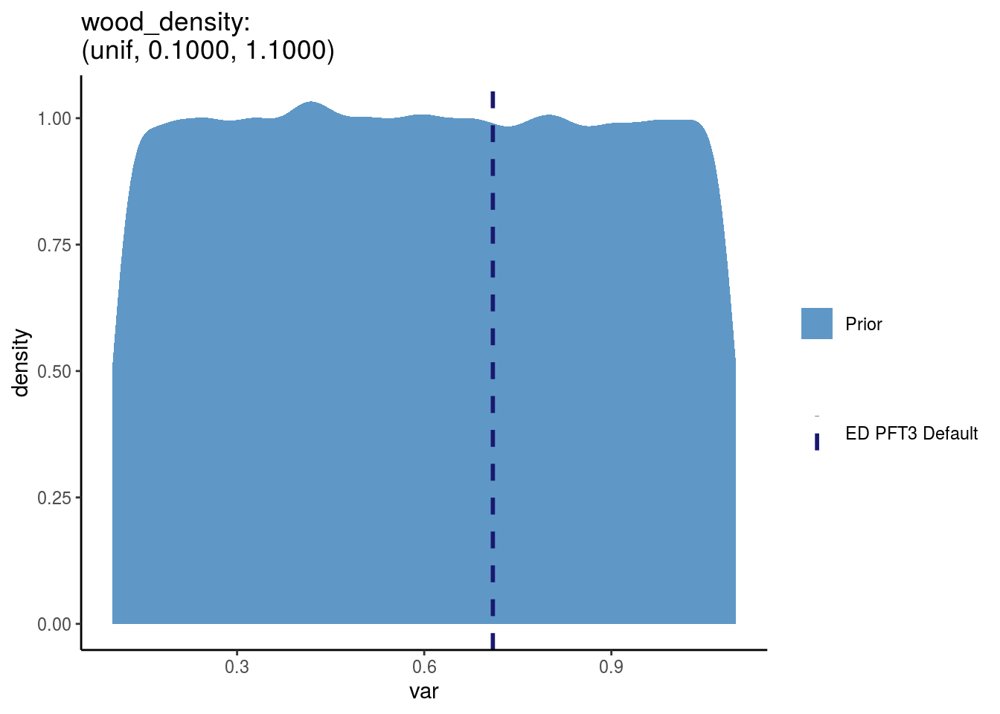

Allocation and Allometry
[SLA]: Specific Leaf Area (SLA)
And subsequently \(LMA = (1/SLA)\)
- ED variable name :
SLA - ED variable id: 15
There are multiple priors available for SLA so we are explicitly choosing prior
142 (this was chosen by someone else when the PFT was created.)
t = "SLA"
t_long = "Specific Leaf Area "
traits[[t]] <- list(
variable_name = t,
variable_id = pfts_priors %>% filter(var_name == t) %>% pull(variable_id),
prior_id = pfts_priors %>% filter(var_name == t) %>% pull(id),
fit = pfts_priors %>% filter(var_name == t) %>% select("distn", "parama", "paramb")
)
traits[[t]]$prior = rdistn(traits[[t]]$fit)
traits[[t]]$default = get_ED_default(PFT3_defaults_history, t)
prior_plot(prior = traits[[t]]$prior,
plot_default = traits[[t]]$default,
title = sprintf("%s(%s):\n%s(%.4f, %.4f)", t_long, t,
traits[[t]]$fit$distn,
traits[[t]]$fit$parama,
traits[[t]]$fit$paramb),
type = "prior")
agf_bs Abvgnd % Struc. Biomass
b1Bl_large Leaf Biomass Allom. Int.
b2Bl_large Leaf Biomass Allom. Slope
[wood_density]: Wood density
- ED variable name :
rho - ED units:
g cm-3Note! Leaf density is calculated inkg cm-3because that makes perfect sense … - ED variable id: 1000000055
- FATES varaiable name:
WD
In the database, wood_density is unitless.
So I’m assuming it can be directly mapped to our wood_density as such:
\[\frac{WD (gcm^{-2})}{\rho_w(gcm^{-2})} * \rho_w(gcm^{-2}) = \frac{WD (gcm^{-2})}{1(gcm^{-2})} * 1(gcm^{-2})\]
There are multiple priors available for wood density so we are explicitly choosing prior 1000000281 (this was chosen by someone else when the PFT was created.)
t = "wood_density"
traits[[t]] <- list(
variable_name = t,
variable_id = pfts_priors %>% filter(var_name == t) %>% pull(variable_id),
prior_id = pfts_priors %>% filter(var_name == t) %>% pull(id),
fit = pfts_priors %>% filter(var_name == t) %>% select("distn", "parama", "paramb")
)
traits[[t]]$prior = rdistn(traits[[t]]$fit)
traits[[t]]$default = get_ED_default(PFT3_defaults_history, "rho")
prior_plot(prior = traits[[t]]$prior,
plot_default = traits[[t]]$default,
title = sprintf("%s:\n(%s, %.4f, %.4f)", t,
traits[[t]]$fit$distn,
traits[[t]]$fit$parama,
traits[[t]]$fit$paramb),
type = "prior")